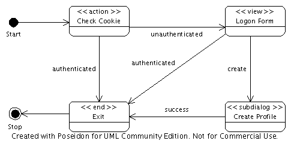
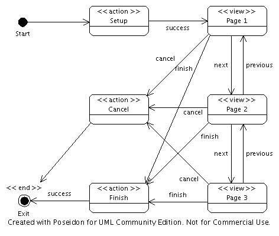

This package contains two dialogs (as supported by the package
org.apache.shale.dialog):
The Log On dialog supports features typically required for
application managed authentication, including the ability to ask for a
"remember me" cookie, and to create a new profile. Detailed functionality
is configured by setting the following managed bean properties on a bean
named profile$logon:
rememberMe (boolean) - Flag indicating that support for
"remember me" cookies is enabled. By default, this feature is
disabled.userKey (String) - Session scope attribute key under which
the User instance for the currently
logged on instance is stored [user].The following state diagram documents the flow through this dialog:

The defined states have the following functionality:
Check Cookie (action) - If the rememberMe flag
is set, check for the existence of an appropriate "remember me" cookie
on the current request. If such a cookie is found, return logical outcome
"authenticated"; otherwise, return logical outcome "unauthenticated".Logon Form (view) - Display the logon form and wait for the
user's subsequent input. Return the following logical outcomes based on
what the user actually does:
authenticated - Username and password are successfully
authenticated.create - User selected the "Create New Profile" option.Create Profile (subdialog) - Use the
Edit Profile dialog in a special mode to create a new profile (and
leave the user logged on).Exit (end) - Render the application main menu.The Edit Profile dialog supports the ability to update the current
profile (for a logged on user), or to create a new profile (if no user is
currently logged on). Detailed functionality is configured by setting the
following managed bean properties on a bean named profile$edit:
confirmation (boolean) - Flag indicating that a confirmation
email must be sent, and the acknowledgement received, before the new profile
is activated. NOTE - the actual email sending and response receiving
functionality is not present in this application.userKey (String) - Session scope attribute key under which
the User instance for the currently
logged on instance is stored [user].The following state diagram documents the flow through this dialog:

The defined states have the following functionality:
Setup (action) - Register an instance of our dialog state
bean with the dialog system, and return logical outcome success.Page 1 (view) - Render the first page of the profile,
and return a logical outcome based on which button the user pressed.Page 2 (view) - Render the second page of the profile,
and return a logical outcome based on which button the user pressed.Page 3 (view) - Render the third page of the profile,
and return a logical outcome based on which button the user pressed.Cancel (action) - Perform any cleanup needed to respond to
the user cancelling this dialog, then return logical outcome
success.Finish (action) - Check for a duplicate username, or mismatched
password entries, and return to the appropriate page on an error.
Otherwise, create or update the user profile and return logical outcome
success, leaving a new user logged on.